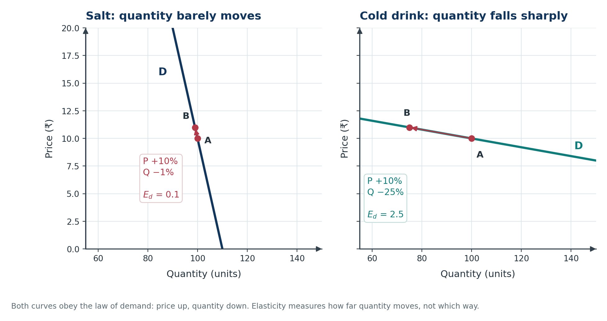
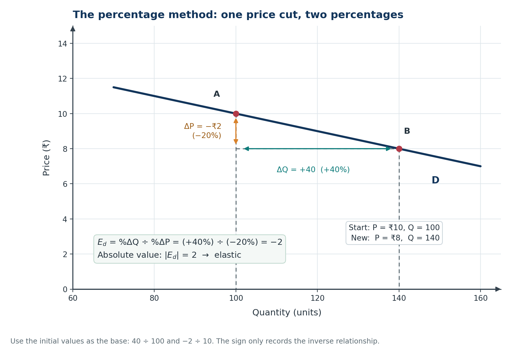
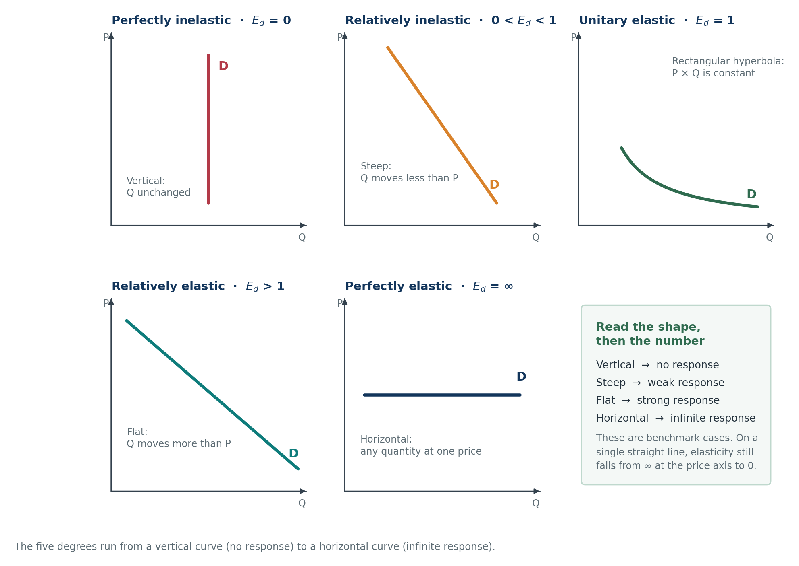
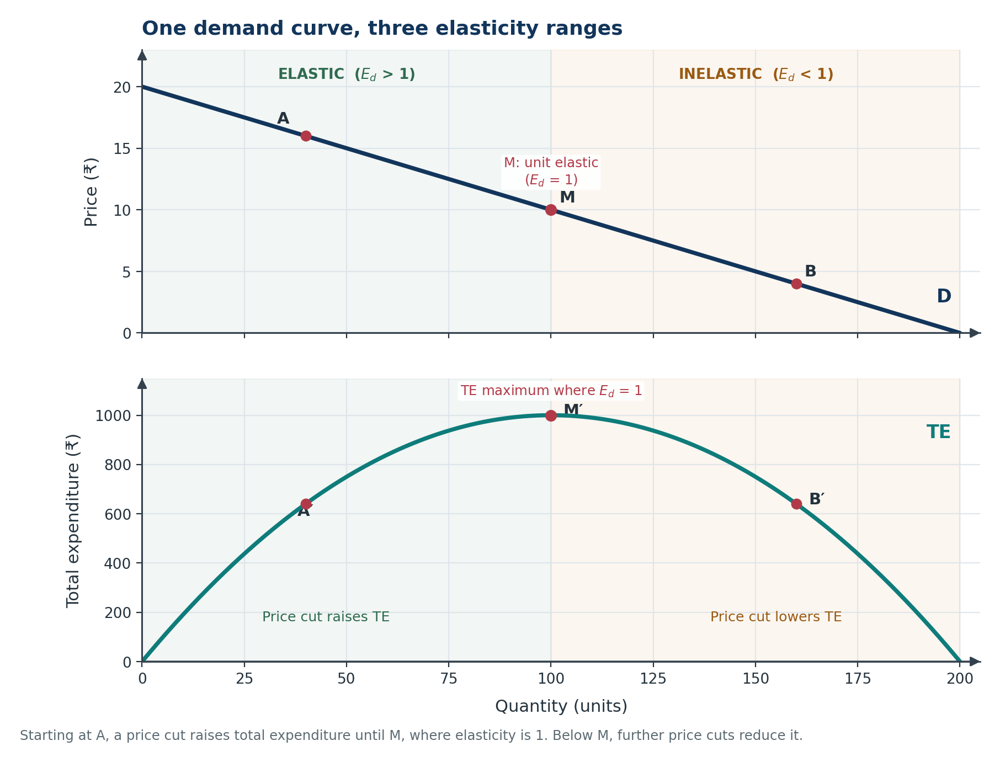
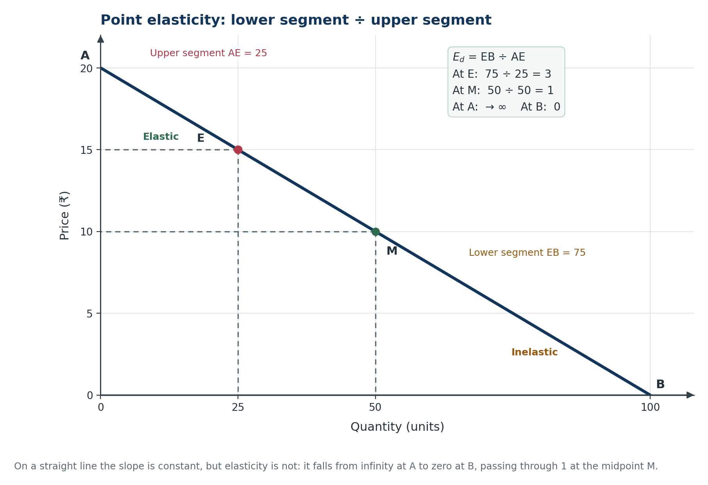
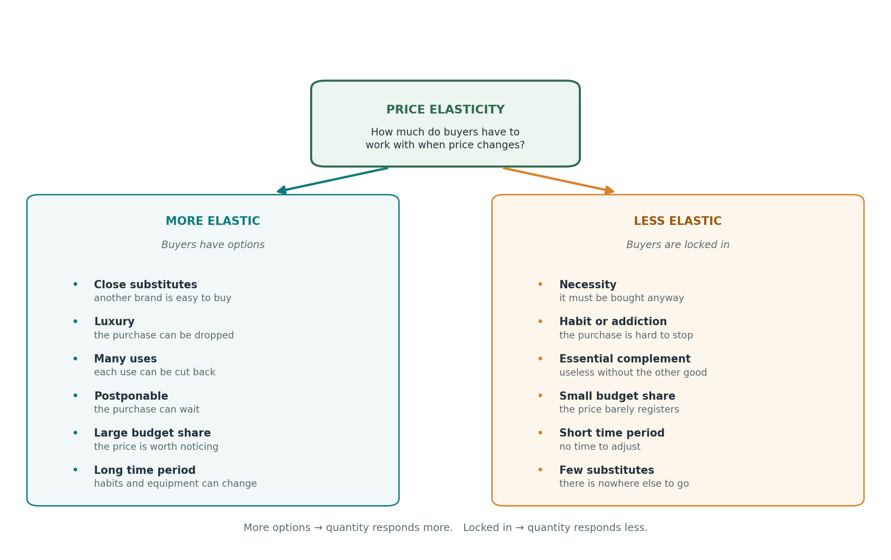

Microeconomics · Class 11Chapter 4Notes + quick revision
Elasticity of Demand
The law of demand says price and quantity move in opposite directions. Elasticity says how far. That one number decides whether a price cut raises a shop's revenue, how much of a tax buyers end up paying, and why a cinema can charge students less than business travellers.
Chapter at a glance
Nine stops: from why the law of demand is incomplete to the exact number that decides a price change, and the exam lines that carry marks. Tap a card to jump straight in.
The one-line idea: elasticity measures how strongly quantity demanded responds to a price change; the law of demand gives the direction, elasticity gives the size.
The core question: if price changes by 1%, by what percentage does quantity demanded change — and what does that mean for total spending?
Key Terms — Read These First
The words that carry marks. Read them once now, then test yourself after the chapter.
- Price elasticity of demand
- The percentage change in quantity demanded divided by the percentage change in the good's own price, other things constant.
- Elastic demand
- Quantity changes proportionately more than price: |Ed| > 1.
- Inelastic demand
- Quantity changes proportionately less than price: 0 < |Ed| < 1.
- Unitary elastic demand
- The percentage changes in price and quantity are equal: |Ed| = 1.
- Perfectly inelastic demand
- Quantity does not change at all when price changes: Ed = 0, a vertical curve.
- Perfectly elastic demand
- Buyers will take any quantity at the ruling price: Ed = ∞, a horizontal curve.
- Percentage method
- Ed = %ΔQ ÷ %ΔP, using initial values as the base. Also called the proportionate or flux method.
- Absolute value
- The size of the coefficient without its negative sign: |Ed|. The sign only records the inverse price–quantity relation.
- Rectangular hyperbola
- The curve on which P × Q is constant at every point; elasticity is 1 throughout.
- Total expenditure (TE)
- Price × quantity bought: TE = P × Q. Also called outlay.
- Total revenue (TR)
- Price × quantity sold: TR = P × Q. From the seller's side, TE and TR are the same amount.
- Expenditure test
- A rough method that reads elasticity from the direction of the change in TE when price changes.
- Geometric method
- Point elasticity on a straight-line demand curve: Ed = lower segment ÷ upper segment.
- Upper and lower segments
- The two parts into which a point divides the demand line: AE above the point, EB below it.
- Midpoint
- The point where the two segments are equal; elasticity is exactly 1 there.
- Determinants of elasticity
- The factors that make demand more or less responsive: substitutes, nature of the good, uses, postponement, budget share, habits, time, complements and price level.
- Substitute
- A good that can replace another. More close substitutes make demand more elastic.
- Complement
- A good used together with another. An essential complement makes demand less elastic.
- Budget share
- The fraction of a buyer's spending that goes to the good. A small share makes demand less elastic.
- Price discrimination
- Charging different prices in separate markets with different elasticities.
- Marginal revenue (MR)
- The addition to total revenue from one more unit sold: MR = AR(1 − 1/Ed).
Why Elasticity? Meaning and Definition
The idea of this section. The law of demand tells us the direction of the price–quantity relationship. It is silent on the size. Elasticity fills that gap with a single unit-free number.
1.1 The gap in the law of demand
The law of demand says that, other things constant, a rise in price reduces quantity demanded and a fall in price raises it. That is a statement about direction, not size.
Two goods can obey the law and still behave very differently. A 10% rise in the price of salt may cut quantity by 1%. The same 10% rise in the price of a cold drink may cut quantity by 25%. Both curves slope downward; one is almost vertical, the other much flatter.
In simple words. The law of demand tells you which way the seesaw tips; elasticity tells you how far.
1.2 Definition
Definition. Price elasticity of demand is the degree of responsiveness of quantity demanded to a change in the good's own price, other things remaining constant. It is the percentage change in quantity demanded divided by the percentage change in price.
The concept is associated with Alfred Marshall's Principles of Economics (1890). In this chapter, “elasticity” means price elasticity unless stated otherwise.
Demand is elastic when the percentage change in quantity exceeds the percentage change in price. It is inelastic when the quantity change is proportionately smaller. When the two are equal, demand is unitary elastic.
Quick example. Price rises 10%. Quantity falls 20%: elastic. Quantity falls 4%: inelastic. Quantity falls 10%: unitary.
1.3 A pure number
Elasticity compares two percentage changes, so the units cancel. A value of 2 means quantity responds twice as strongly, in percentage terms, as price. It is not 2 kilograms or ₹2. That is why we can compare the price sensitivity of salt and gold with the same number.
Because price and quantity move in opposite directions, the calculated coefficient is usually negative. Economists report the absolute value, |Ed|. The sign only records the inverse relationship; the size tells you the responsiveness.

What to notice. The direction is the same in both panels; only the size differs. Elasticity is the number that captures that size.
1.4 Elastic, inelastic, unitary
| Label | Coefficient | Meaning | Everyday example |
|---|---|---|---|
| Elastic | |Ed| > 1 | Quantity moves proportionately more than price | Cold drinks, branded clothing |
| Unitary | |Ed| = 1 | The two percentage changes are equal | A good with constant total spending |
| Inelastic | 0 < |Ed| < 1 | Quantity moves proportionately less than price | Salt, matchsticks, insulin |
“Elastic” does not mean “large quantity”. A market can sell millions of units and still be inelastic if buyers barely respond to price. Elasticity is about responsiveness, not size.
- Q1. Define price elasticity of demand. Why is it needed when the law of demand already exists?
- Q2. Price of X rises 10% and quantity falls 20%. Price of Y rises 10% and quantity falls 5%. Which demand is more elastic?
- Q3. Why might a 10% rise in the price of salt and a 10% rise in the price of a luxury watch produce different percentage falls in quantity?
Show answers
- It is the percentage change in quantity demanded divided by the percentage change in the good's own price, other things constant. The law gives only the direction; elasticity measures the size of the response.
- X: Ed = 20/10 = 2. Y: Ed = 5/10 = 0.5. Demand for X is more elastic.
- Salt is a necessity with few substitutes and a small budget share, so its demand is inelastic. A watch is a luxury with substitutes and a large budget share, so its demand is more elastic.
The Percentage Method
The idea of this section. Elasticity is a ratio of two percentage changes. The only two decisions are which base to divide by and what to do with the negative sign.
2.1 Formula and terms
The percentage method is also called the proportionate, flux or mathematical method.
Q and P are the initial quantity and price; Q1 and P1 are the new values; ΔQ = Q1 − Q and ΔP = P1 − P. The 100 in each percentage cancels, which gives the ratio form.
Pointer. The formula uses the initial P and Q. If the question gives only the new values, find the changes first.
2.2 Why percentages, and which base?
Absolute changes are not comparable. A ₹1 fall means something different for a pen and a car. Ten extra units is large for a shop selling 50 and small for one selling 10,000. Percentages scale the change to the initial value, cancel units and produce a pure number.
Use the initial value as the base, as in the standard CBSE formula. If price falls, ΔP is negative and ΔQ is positive; if price rises, ΔP is positive and ΔQ is negative. The ratio is negative either way, so take the absolute value. Do not reverse the formula when the direction changes.
Warning. The same absolute change can give different coefficients from different starting points. A ₹2 fall from ₹10 is 20%; a ₹2 rise from ₹8 is 25%. Always check the base before comparing two elasticities.
2.3 A worked price cut
Price falls from ₹10 to ₹8; quantity rises from 100 to 140 units. The price change is −20%, the quantity change is +40%, so Ed = 40 ÷ (−20) = −2. The absolute value is 2: elastic.

What to notice. The vertical step is the price change; the horizontal step is the quantity change. Each is divided by its own initial value, not by the new one.
2.4 Six worked examples
| # | Change | %ΔQ | %ΔP | Ed | Result |
|---|---|---|---|---|---|
| 1 | Price ₹10 → ₹8; quantity 100 → 140 | +40% | −20% | −2 | Elastic |
| 2 | Price ₹5 → ₹4; quantity 20 → 24 | +20% | −20% | −1 | Unitary |
| 3 | Price ₹8 → ₹10; quantity 40 → 32 | −20% | +25% | −0.8 | Inelastic |
| 4 | Price ₹20 → ₹16; quantity 40 → 50 | +25% | −20% | −1.25 | Elastic |
| 5 | Price falls 5%; quantity rises 12% | +12% | −5% | −2.4 | Elastic |
| 6 | Price ₹10 → ₹5; Ed = 3; initial Q = 40 | +150% | −50% | −3 | New Q = 100 |
Example 6 in steps. The price fall is 50%. Taking absolute values, 3 = %ΔQ ÷ 50%, so %ΔQ = 150%. New quantity = 40 + 1.5 × 40 = 100 units.
2.5 The base matters
The same ₹2 price change and 1-unit quantity change can give different coefficients:
- ₹10 → ₹8, quantity 4 → 5: Ed = 25% ÷ 20% = 1.25.
- ₹8 → ₹10, quantity 5 → 4: Ed = 20% ÷ 25% = 0.8.
The absolute changes are identical; the bases are not. Elasticity is a local measure around a starting point, not a fixed property of a good for all price changes.
- Q1. Why use percentage changes instead of absolute changes?
- Q2. Price falls from ₹12 to ₹9; quantity rises from 60 to 75. Calculate Ed and classify demand.
- Q3. A shopkeeper says, “Price fell by ₹2 and sales rose by 10 units, so demand is elastic.” What is missing?
Show answers
- Absolute changes are not comparable across goods or market sizes. Percentages use the initial values, cancel units and give a pure number.
- %ΔQ = 15/60 × 100 = 25%; %ΔP = −3/12 × 100 = −25%; Ed = 25 ÷ (−25) = −1. |Ed| = 1: unitary elastic.
- He needs percentage changes, not absolute changes. Without the initial price and quantity, ₹2 and 10 units could imply any elasticity.
The Five Degrees of Elasticity
The idea of this section. Elasticity runs on a scale from zero to infinity. Five benchmark cases cover the scale, and each has a characteristic shape.
3.1 The five cases
| Degree | Value | Shape | Example |
|---|---|---|---|
| Perfectly inelastic | Ed = 0 | Vertical line | Life-saving medicine with no substitute (extreme) |
| Relatively inelastic | 0 < Ed < 1 | Steep curve | Salt, matchsticks |
| Unitary elastic | Ed = 1 | Rectangular hyperbola | A good with constant total expenditure |
| Relatively elastic | Ed > 1 | Flat curve | Branded clothing, cold drinks |
| Perfectly elastic | Ed = ∞ | Horizontal line | A firm under perfect competition |
- Ed = 0: quantity does not change when price changes.
- 0 < Ed < 1: quantity changes proportionately less than price.
- Ed = 1: the two percentage changes are equal; P × Q is constant along a rectangular hyperbola.
- Ed > 1: quantity changes proportionately more than price.
- Ed = ∞: at the ruling price buyers will take any quantity; a tiny price rise reduces demand to zero. A perfectly competitive firm, a price taker, faces this horizontal curve.
3.2 The shapes

What to notice. Vertical means quantity does not respond; horizontal means buyers will take any quantity at the going price. Between them, steep is less responsive and flat is more responsive. The unitary curve is a curve, not a straight line, because only a rectangular hyperbola keeps P × Q constant at every point.
3.3 Reading the curves correctly
Warning. Do not read elasticity from steepness alone. On a single straight-line demand curve the coefficient changes from infinity at the price axis to zero at the quantity axis. The five panels above are drawn so that the labelled elasticity holds along the whole curve; Section 5 shows the straight-line case.
Two demand curves can be compared by steepness only when they pass through the same point. Even then, the comparison is about the responsiveness at that point, not about the slope of the whole line.
| Shape | What a price rise does | Elasticity |
|---|---|---|
| Vertical | Quantity unchanged | 0 |
| Steep | Quantity falls a little | Between 0 and 1 |
| Rectangular hyperbola | Quantity falls just enough to keep P × Q constant | 1 |
| Flat | Quantity falls a lot | Greater than 1 |
| Horizontal | Quantity falls to zero at any higher price | Infinity |
- Q1. Match each degree to its shape: 0, 0 < Ed < 1, 1, > 1, ∞.
- Q2. A demand curve is a rectangular hyperbola. Price rises from ₹10 to ₹12. What happens to total expenditure?
- Q3. Why is a perfectly competitive firm's demand curve horizontal, and what is its elasticity?
Show answers
- 0: vertical; 0 < Ed < 1: steep; 1: rectangular hyperbola; > 1: flat; ∞: horizontal.
- It stays unchanged. Ed = 1 everywhere on a rectangular hyperbola, so the price rise is exactly offset by the fall in quantity.
- The firm is a price taker: it can sell any quantity at the market price but nothing above it. Its demand curve is horizontal, so Ed = ∞.
The Total Expenditure Method
The idea of this section. When price changes, total spending is pulled in two directions. Elasticity decides which pull wins, so the direction of the change in spending reveals the elasticity.
4.1 The test
Total expenditure is price times quantity. The method based on it is also called the outlay method. From the seller's side, total expenditure is total revenue.
When price falls, two forces act on expenditure: each unit is cheaper (pulls TE down), but more units are bought (pushes TE up). Elasticity decides which force wins.
- If demand is elastic, the quantity effect dominates and TE rises.
- If demand is inelastic, the price effect dominates and TE falls.
- If demand is unitary, the two effects offset and TE is unchanged.
4.2 The three cases
| Elasticity | Price falls | Price rises | Direction of price and TE |
|---|---|---|---|
| Ed > 1 | TE rises | TE falls | Opposite |
| Ed = 1 | TE unchanged | TE unchanged | No change |
| Ed < 1 | TE falls | TE rises | Same |
Start at ₹10 and 100 units, so TE = ₹1,000. Price falls to ₹8. Three alternative quantity responses give three outcomes:
| Response | New quantity | New TE (₹) | TE change |
|---|---|---|---|
| Elastic | 140 | 1,120 | Rose |
| Unitary (TE test) | 125 | 1,000 | Unchanged |
| Inelastic | 105 | 840 | Fell |
These are alternatives, not a sequence. For a price rise, read the table in reverse: elastic → TE falls; unitary → unchanged; inelastic → TE rises.
4.3 Seeing the test on a demand curve

What to notice. Start at A (price ₹16, quantity 40), where TE is ₹640. Cut price towards M: TE rises to ₹1,000. At M, Ed = 1 and TE is maximum. Cut price further towards B: TE falls back to ₹640 even though quantity is much larger.
4.4 Why it is only a rough test
- It gives a direction, not a coefficient. It can say “elastic”, not “Ed = 2.3”.
- It cannot separate Ed = 0 from 0 < Ed < 1: both make TE fall when price falls. It cannot separate Ed = ∞ from Ed > 1: both make TE rise when price falls.
- It assumes other factors are constant. If income or tastes change too, the TE change may not be due to price.
- Discrete arithmetic can blur the boundary. For ₹8 → ₹10 and 40 → 32 units, the percentage method gives Ed = 0.8, while TE happens to stay at ₹320. The expenditure test reads direction; the percentage method gives the coefficient.
In simple words. The expenditure test is a thermometer, not a precision instrument.
- Q1. State the relation between price and TE for Ed > 1, Ed = 1 and Ed < 1.
- Q2. Price rises from ₹20 to ₹25 and TE falls from ₹2,000 to ₹1,800. What is the elasticity range?
- Q3. Why can the TE method not distinguish Ed = 0 from Ed = 0.5?
Show answers
- Ed > 1: opposite directions. Ed = 1: TE unchanged. Ed < 1: same direction.
- Price rose and TE fell, so they moved oppositely: demand is elastic (Ed > 1).
- In both cases a price fall reduces TE and a price rise raises it. The direction is the same; only the size differs, and the method does not measure size.
The Geometric Method
The idea of this section. On a straight-line demand curve, a point divides the line into two segments. The ratio of those segments is the elasticity at that point — no price or quantity table needed.
5.1 The segment formula
The geometric or point method measures elasticity at one point on a straight-line demand curve using the two segments cut by that point.
A is the price-axis intercept, B the quantity-axis intercept, and E the point. AE is the upper segment; EB is the lower segment. Because the line is straight, the ratio of the segments equals the ratio of their horizontal projections, so the quantities can be read off the quantity axis.
Memory line. Lower over upper. The lower segment is the one nearer the quantity axis.
5.2 Midpoint and halves

What to notice. Above M, the lower segment is longer, so Ed > 1. Below M, the lower segment is shorter, so Ed < 1. At M the two are equal, so Ed = 1. At A the upper segment is zero, so Ed → ∞; at B the lower segment is zero, so Ed = 0.
At E, price is ₹15 and quantity is 25 units. The horizontal projections are 25 and 75:
The point formula gives the same result:
where the slope is |ΔP/ΔQ| = 20/100 = 0.2 for this line.
5.3 Intercept cases
| Position | Upper AE | Lower EB | Ed |
|---|---|---|---|
| At A (price axis) | 0 | AB | ∞ |
| Above M | Smaller | Larger | > 1 |
| At M | Equal | Equal | 1 |
| Below M | Larger | Smaller | < 1 |
| At B (quantity axis) | AB | 0 | 0 |
Two lessons: slope is not elasticity, because a straight line has one slope but elasticity changes from infinity to zero; and position matters, so compare two curves at the same price and quantity, not by steepness alone.
Exam line. On a straight-line demand curve, the upper half is elastic, the midpoint is unit elastic, and the lower half is inelastic.
- Q1. State the geometric formula and the elasticity at the midpoint.
- Q2. A straight-line demand curve cuts the price axis at ₹20 and the quantity axis at 100 units. Find Ed at Q = 25.
- Q3. Why is elasticity infinite at the price-axis intercept and zero at the quantity-axis intercept?
Show answers
- Ed = EB/AE, lower ÷ upper. At the midpoint the segments are equal, so Ed = 1.
- At Q = 25, the price is ₹15. Lower horizontal segment = 75, upper = 25, so Ed = 75/25 = 3.
- At A the upper segment is zero, so division by zero makes Ed → ∞. At B the lower segment is zero, so Ed = 0/AB = 0.
Determinants of Price Elasticity
The idea of this section. Elasticity is not a fixed property of a good. It changes with the buyer's options: substitutes, time, uses, habits and how much of the budget the good takes.
6.1 The determinants
| Determinant | Effect | Example |
|---|---|---|
| Availability of substitutes | More substitutes → more elastic | A soap brand vs soap in general |
| Nature of the good | Necessity → inelastic; luxury → elastic | Salt vs a foreign holiday |
| Number of uses | More uses → more elastic | Milk vs a single-use medicine |
| Postponement of consumption | Can postpone → more elastic | Car vs urgent medicine |
| Share of income | Small share → inelastic; large → elastic | Matchbox vs refrigerator |
| Habits | Strong habit or addiction → inelastic | Cigarettes for a regular smoker |
| Time period | Longer period → more elastic | Petrol in the short vs long run |
| Complementarity | Used with another good → often less elastic | Petrol for a car; printer cartridge |
| Price level | Higher price → generally more elastic | A ₹50,000 watch vs a ₹500 watch |
The strongest factor is substitutes. If buyers can switch easily, a price rise sends them away quickly. This is why demand for “salt” is inelastic but demand for a particular salt brand is more elastic: the brand has rivals.
6.2 Options versus lock-in

Necessities, habits and essential complements all reduce the buyer's options. Luxuries, postponable purchases and goods with many uses increase them. Time matters because adjustment takes time: petrol demand is less elastic in the short run, when drivers still have the same cars, than in the long run, when they can buy efficient vehicles or use public transport.
A useful summary. Elasticity is high when buyers have options — substitutes, time, other uses, budget room. It is low when they are locked in — necessity, habit, addiction, or an essential complement.
- Q1. Why is the demand for salt usually inelastic?
- Q2. A new soap brand has many close substitutes; a life-saving insulin brand has few. Which demand is more elastic?
- Q3. Why does demand become more elastic over a longer time period?
Show answers
- Salt is a necessity with few substitutes, a small budget share and habitual purchase, so quantity responds little to price.
- The soap brand. Buyers can switch to rivals; insulin buyers have few alternatives and the good is essential.
- Consumers have more time to change habits, find substitutes or buy efficient equipment, so the quantity response can work itself out.
Elasticity and Total Revenue
The idea of this section. Every seller is really asking an elasticity question: if I cut price, will the extra units make up for the lower price per unit?
7.1 The seller's question
From the seller's side, total expenditure is total revenue:
P is price per unit and Q is quantity sold. Before changing price, a seller asks whether extra units will compensate for the lower price per unit. Elasticity answers that.
| Elasticity | Price rises | Price falls | Seller's reading |
|---|---|---|---|
| Ed > 1 | TR falls | TR rises | A price cut raises revenue |
| Ed = 1 | TR unchanged | TR unchanged | Price changes do not raise revenue |
| Ed < 1 | TR rises | TR falls | A price rise raises revenue |
Read it with Figure 4.4. The TE curve is the revenue curve seen from the buyer's side. It rises while demand is elastic, peaks at the midpoint where Ed = 1, and falls when demand is inelastic.
7.2 A café example
A café sells 100 cups at ₹50, so its total revenue is ₹5,000. It cuts price to ₹45 and sells 130 cups, so revenue is ₹5,850. The changes are −10% in price and +30% in quantity, so Ed = 30/10 = 3. Revenue rises by ₹850.
Whether profit rises depends on the cost of the extra 30 cups. If each extra cup costs ₹40 to make, the extra revenue of ₹850 is partly eaten by ₹1,200 of extra cost, and profit falls even though revenue rises.
Warning. Revenue maximisation is not profit maximisation. A price cut can raise TR and still lower profit if extra output costs more than the extra revenue.
7.3 The marginal revenue link
Chapter 7 gives the exact relationship:
MR is marginal revenue, AR is average revenue (price), and Ed is the absolute value of elasticity.
- If Ed > 1, the bracket is positive, so MR > 0 and TR is still rising.
- If Ed = 1, MR = 0 and TR is at its maximum.
- If Ed < 1, MR < 0 and TR is falling.
This is why a seller facing a straight-line demand curve maximises revenue at the midpoint, exactly where Ed = 1 in Figure 4.4.
- Q1. If Ed = 0.6, what happens to TR when price rises?
- Q2. Price falls from ₹50 to ₹45 and quantity rises from 100 to 130. Find Ed and the change in TR.
- Q3. Why does a price cut raise revenue only when demand is elastic?
Show answers
- TR rises. Demand is inelastic, so the price effect dominates.
- %ΔP = −10%, %ΔQ = 30%, so Ed = 3. TR rises from ₹5,000 to ₹5,850, an increase of ₹850.
- The price cut lowers revenue per unit but raises units sold. With elastic demand, the percentage rise in quantity exceeds the percentage fall in price, so the quantity effect wins.
Elasticity in Policy and Business
The idea of this section. Elasticity is not just an exam calculation. It shapes tax policy, monopoly pricing, export earnings, price discrimination and wage bargaining.
8.1 Five applications
| Use | How elasticity matters | Example |
|---|---|---|
| Taxation | Tax inelastic goods to raise revenue with little loss of quantity; consumers bear more of the tax when demand is inelastic relative to supply | Salt, fuel, tobacco |
| Monopoly pricing | A price-maker studies elasticity before changing price; profit-maximising output lies on the elastic range, where MR is positive | Patented medicine |
| Devaluation | Exports become cheaper abroad; elastic export demand raises earnings, inelastic demand lowers them | Textiles vs specialised machinery |
| Price discrimination | Charge more where demand is inelastic, less where it is elastic | Student discounts, airline fares |
| Wage bargaining | Inelastic labour demand means a wage rise causes a smaller employment fall, giving workers more power | Doctors, specialised engineers |
8.2 The qualifications
Taxation is not only about revenue. A tax on salt may be revenue-safe but regressive, hitting poor households harder; elasticity predicts the revenue effect, not the fairness.
Devaluation works through export demand. A cheaper currency lowers the foreign price of exports. If foreign buyers respond strongly, quantity rises enough to raise earnings; if they respond weakly, the price fall dominates and earnings fall.
Price discrimination requires different elasticities and separate markets. Students are more price-sensitive than business travellers, so cinemas and airlines discount to students while charging business travellers more. If resale is easy, the low-price buyer undercuts the high-price market and the scheme collapses.
A final warning. Elasticity predicts direction, not the whole decision. Governments also care about fairness, firms about costs, and unions about the total wage bill.
- Q1. Why do governments often tax goods with inelastic demand?
- Q2. A country devalues and export demand is inelastic. What happens to export earnings?
- Q3. Why can a seller charge different prices to two groups?
Show answers
- A tax raises price without a large fall in quantity, so revenue is relatively stable and more of the tax is passed to consumers when demand is inelastic relative to supply.
- Earnings fall: the foreign-currency price falls, but quantity rises less than proportionately.
- The groups have different elasticities and the markets can be kept separate. The seller charges more to the inelastic group and less to the elastic group.
Common Mistakes, Recap and Exam Practice
The idea of this section. Most lost marks in this chapter come from three places: the wrong base, the wrong direction in the geometric formula, and treating slope as elasticity. Fix those and the rest is practice.
9.1 Common mistakes
| Mistake | Correct idea |
|---|---|
| Reporting elasticity as negative and treating the sign as strength | Report the absolute value; the sign only shows the inverse relationship. |
| Using the new price or quantity as the base | Use the initial values in the standard CBSE formula. |
| Thinking elastic demand means a large quantity demanded | Elasticity is responsiveness, not market size. |
| Treating a steep curve as inelastic at every point | On a straight line, elasticity changes from infinity to zero; slope is not elasticity. |
| Thinking Ed = 1 means quantity is constant | It means the percentage changes are equal; quantity does change. |
| Treating unchanged TE as an exact proof of Ed = 1 in every example | The expenditure test is rough; discrete arithmetic can blur the boundary. |
| Using the TE test to separate Ed = 0 from Ed < 1 | It cannot; both move TE in the same direction. |
| Writing upper ÷ lower in the geometric method | It is lower ÷ upper. |
| Confusing a movement along the curve with a shift | Own-price changes move along the curve; income or taste changes shift it. |
9.2 Chapter recap
- Elasticity measures the size of the quantity response; the law of demand gives only the direction.
- Ed = (ΔQ/Q) ÷ (ΔP/P), using initial values and reporting the absolute value.
- The five degrees: 0 vertical, less than 1 steep, 1 rectangular hyperbola, more than 1 flat, infinity horizontal.
- TE method: Ed > 1 → opposite; Ed < 1 → same; Ed = 1 → unchanged. It is only a rough test.
- Geometric method: Ed = lower ÷ upper; midpoint 1; upper half elastic, lower half inelastic; intercepts infinity and zero.
- Elasticity is higher with substitutes, luxuries, many uses, postponement, a large budget share, a long time period and a high price level; lower for necessities, habits and essential complements.
- A price cut raises TR when demand is elastic, lowers it when inelastic, and leaves it unchanged when unitary. Revenue maximisation is not profit maximisation.
- Elasticity informs taxation, monopoly pricing, devaluation, price discrimination and wage bargaining.
9.3 Formula sheet
| Concept | Formula | Remember |
|---|---|---|
| Percentage change | %ΔX = ((X1 − X0) ÷ X0) × 100 | Divide by the initial value |
| Price elasticity | Ed = %ΔQ ÷ %ΔP = (ΔQ/Q) ÷ (ΔP/P) | Take the absolute value |
| Expanded form | Ed = (ΔQ/ΔP) × (P/Q) | ΔQ = Q1 − Q; ΔP = P1 − P |
| Total expenditure | TE = P × Q | Same as total revenue |
| TE test | Ed > 1: opposite; Ed < 1: same; Ed = 1: unchanged | Direction only |
| Geometric method | Ed = EB ÷ AE | Lower ÷ upper; midpoint 1 |
| Point elasticity | Ed = (P/Q) × (1 ÷ |slope|) | Slope = ΔP/ΔQ; use absolute value |
| Revenue link | MR = AR × (1 − 1/Ed) | Ed as absolute value; Ed = 1 ⇒ MR = 0 |
9.4 Exam-style questions
Very short answer (1 mark)
- Define price elasticity of demand.
- What is Ed at the midpoint of a straight-line demand curve?
- What is the shape of a perfectly inelastic demand curve?
- A 10% price rise cuts quantity by 5%. Is demand elastic or inelastic?
- Price falls and demand is elastic. What happens to total expenditure?
Short answer (3 marks)
- Why does the percentage method use percentage changes rather than absolute changes?
- Calculate Ed when price falls from ₹20 to ₹16 and quantity rises from 40 to 50 units. Interpret the result.
- Distinguish perfectly elastic from perfectly inelastic demand, with the shape of each curve.
- Explain the total expenditure method and its three cases.
Long answer (4–6 marks)
- Explain the percentage method with a worked example and two precautions.
- Explain the geometric method on a straight-line demand curve, including the midpoint, the two halves and the intercept cases.
- Explain any five determinants of price elasticity with examples.
Answer pointers
Very short answer.
- Percentage change in quantity demanded divided by percentage change in own price, other things constant.
- Ed = 1.
- A vertical straight line.
- Inelastic (Ed = 0.5).
- Total expenditure rises.
Short answer.
- Absolute changes are not comparable across goods or market sizes; percentages use initial values, cancel units and give a pure number.
- %ΔQ = 10/40 × 100 = 25%; %ΔP = −4/20 × 100 = −20%; Ed = 1.25. Elastic.
- Perfectly elastic: horizontal, Ed = ∞, any quantity at the ruling price. Perfectly inelastic: vertical, Ed = 0, quantity unchanged when price changes.
- TE = P × Q. Ed > 1: opposite; Ed = 1: unchanged; Ed < 1: same. It is a rough directional test.
Long answer.
- Ed = %ΔQ/%ΔP, initial values, full numerical example, absolute value. Precautions: use the initial base; do not confuse absolute with percentage changes.
- Ed = EB/AE. Midpoint: EB = AE, so Ed = 1. Above: EB > AE, Ed > 1. Below: EB < AE, Ed < 1. At A: infinity; at B: zero.
- Any five: substitutes, necessity/luxury, uses, postponement, budget share, habits, time, complementarity, price level. Give an example and the direction of the effect for each.
9.5 One-minute revision
| Non-negotiable | One-line version |
|---|---|
| Definition | Ed = %ΔQ ÷ %ΔP, absolute value |
| Base | Initial price and quantity |
| Degrees | 0 vertical; less than 1 steep; 1 rectangular hyperbola; more than 1 flat; infinity horizontal |
| TE test | Ed > 1 opposite; Ed < 1 same; Ed = 1 unchanged; rough only |
| Geometric | Lower ÷ upper; midpoint 1; upper half > 1, lower half < 1 |
| Revenue | Elastic → cut price to raise TR; inelastic → raise price |
| Determinants | Substitutes, necessity, uses, postponement, budget share, habits, time, complements, price level |
| Caution | Slope is not elasticity; elasticity changes along a straight line |
Quick revision, done properly
How to use this file (30 seconds): read one block → cover it → answer the recall questions aloud → open the answer to check → move on. Total time: about 18 minutes.
- 01Readone block of notes
- 02Coverthe page and recall
- 03Answerthe drill aloud
- 04Checkand move on
24 recall questions · one confusion clinic · one rapid-fire table · one blank-page test.
Meaning, method and degrees
The chapter in 12 lines
- The law of demand gives the direction; elasticity gives the size.
- Ed = %ΔQ ÷ %ΔP, other things constant.
- Report the absolute value; the negative sign only records the inverse relation.
- Use the initial price and quantity as the base.
- Elasticity is a pure number, so salt and gold can be compared.
- |Ed| > 1 elastic; = 1 unitary; < 1 inelastic.
- Ed = 0: vertical. Quantity does not respond.
- Ed = ∞: horizontal. Any quantity at the ruling price.
- Ed = 1: rectangular hyperbola, so P × Q is constant.
- Steep usually means less elastic; flat usually means more elastic — at the same point.
- Slope is not elasticity: one straight line has one slope but many elasticities.
- Perfectly competitive firms face a horizontal demand curve: Ed = ∞.
Why elasticity exists
A 10% price rise may cut salt purchases by 1% and cold-drink purchases by 25%. Both obey the law of demand; the law cannot tell them apart. Elasticity measures the difference.
| Label | Coefficient | Meaning |
|---|---|---|
| Elastic | |Ed| > 1 | %ΔQ is larger than %ΔP |
| Unitary | |Ed| = 1 | %ΔQ equals %ΔP |
| Inelastic | 0 < |Ed| < 1 | %ΔQ is smaller than %ΔP |
Not size: “elastic” does not mean “large quantity”. It means buyers are responsive to price.
The percentage method
Use the initial Q and P. If price falls ₹10 → ₹8 and quantity rises 100 → 140:
| Step | Calculation | Result |
|---|---|---|
| %ΔQ | 40 ÷ 100 × 100 | +40% |
| %ΔP | −2 ÷ 10 × 100 | −20% |
| Ed | +40 ÷ (−20) | −2 |
| |Ed| | size only | 2 → elastic |
Base warning: a ₹2 fall from ₹10 is 20%; a ₹2 rise from ₹8 is 25%. The same absolute change can give different coefficients.
The five degrees
| Degree | Value | Shape | Example |
|---|---|---|---|
| Perfectly inelastic | 0 | Vertical | Essential medicine with no substitute |
| Relatively inelastic | 0 to 1 | Steep | Salt, matchsticks |
| Unitary | 1 | Rectangular hyperbola | Constant total spending |
| Relatively elastic | Above 1 | Flat | Cold drinks, branded clothing |
| Perfectly elastic | ∞ | Horizontal | Firm under perfect competition |
Two warnings: a steep curve is not automatically inelastic at every point, and Ed = 1 does not mean quantity is constant — it means the percentage changes match.
Recall drill — Session 1
Define price elasticity of demand and explain why the law of demand is incomplete without it.
Show answer
It is the percentage change in quantity demanded divided by the percentage change in the good's own price, other things constant. The law gives only the direction of the response; elasticity gives its size.
Price rises 10% and quantity falls 20%. Price rises 10% and quantity falls 5%. Calculate both elasticities and classify them.
Show answer
First: 20 ÷ 10 = 2, elastic. Second: 5 ÷ 10 = 0.5, inelastic. The first good is twice as responsive.
Why use percentage changes, and which values go in the base?
Show answer
Percentages cancel units and make changes comparable across goods and market sizes. Use the initial price and quantity as the base, as in the standard CBSE formula.
Price falls from ₹10 to ₹8; quantity rises from 100 to 140. Find Ed.
Show answer
%ΔQ = 40 ÷ 100 × 100 = 40%; %ΔP = −2 ÷ 10 × 100 = −20%; Ed = 40 ÷ (−20) = −2. |Ed| = 2, elastic.
Price rises from ₹8 to ₹10; quantity falls from 40 to 32. Find Ed.
Show answer
%ΔQ = −8 ÷ 40 × 100 = −20%; %ΔP = 2 ÷ 8 × 100 = 25%; Ed = −20 ÷ 25 = −0.8. |Ed| = 0.8, inelastic.
A 5% fall in price raises quantity by 12%. Find Ed.
Show answer
Ed = 12 ÷ 5 = 2.4. Elastic.
Ed = 3; price falls from ₹10 to ₹5; initial quantity is 40. Find the new quantity.
Show answer
The price fall is 50%. %ΔQ = 3 × 50% = 150%. New quantity = 40 + 1.5 × 40 = 100 units.
Match each degree to its shape: 0, between 0 and 1, 1, above 1, infinity.
Show answer
0: vertical. Between 0 and 1: steep. 1: rectangular hyperbola. Above 1: flat. Infinity: horizontal.
Total expenditure and geometric method
The total expenditure test
TE = P × Q. When price falls, each unit earns less but more units are sold. Elasticity decides which effect wins.
One-line test: price and TE moving in opposite directions means elastic; moving in the same direction means inelastic; no change means unitary.
The three cases
| Elasticity | Price falls | Price rises | Reading |
|---|---|---|---|
| Ed > 1 | TE rises | TE falls | Opposite directions |
| Ed = 1 | TE unchanged | TE unchanged | No change |
| Ed < 1 | TE falls | TE rises | Same direction |
Example: at ₹10 and 100 units, TE = ₹1,000. A cut to ₹8 gives TE = ₹1,120 if quantity rises to 140 (elastic), ₹1,000 at 125 (unitary), or ₹840 at 105 (inelastic).
Rough test only: TE cannot separate 0 from 0.5, or infinity from 2. It gives a direction, not a coefficient.
The geometric method
On a straight-line demand curve from A (price axis) to B (quantity axis), a point E divides the line. Above the midpoint, EB > AE, so Ed > 1. At the midpoint, EB = AE, so Ed = 1. Below it, EB < AE, so Ed < 1.
| Position | Ed | Reason |
|---|---|---|
| At A (price axis) | ∞ | Upper segment is zero |
| Upper half | Above 1 | Lower segment is longer |
| Midpoint | 1 | Segments are equal |
| Lower half | Below 1 | Upper segment is longer |
| At B (quantity axis) | 0 | Lower segment is zero |
Worked check: a line cuts the axes at ₹20 and 100 units. At Q = 25, P = ₹15. Lower projection = 75, upper = 25, so Ed = 75 ÷ 25 = 3.
Limits and comparison
| Method | What it gives | Main limit |
|---|---|---|
| Percentage | An exact coefficient | Needs initial and new P and Q |
| Total expenditure | A direction: elastic, unitary or inelastic | Cannot measure size or separate the extremes |
| Geometric | Elasticity at a point on a straight line | Only for a straight-line demand curve |
Slope is not elasticity: a straight line has one slope, but elasticity falls from infinity at A to zero at B.
Recall drill — Session 2
State the TE test for Ed > 1, Ed = 1 and Ed < 1.
Show answer
Ed > 1: price and TE move oppositely. Ed = 1: TE unchanged. Ed < 1: price and TE move in the same direction.
Price falls from ₹20 to ₹16 and TE rises. What can you say about elasticity?
Show answer
Price and TE moved in opposite directions, so demand is elastic (Ed > 1). The quantity effect dominated.
Why can the TE method not distinguish Ed = 0 from Ed = 0.5?
Show answer
Both are inelastic, so both make TE fall when price falls and rise when price rises. The direction is identical; the method does not measure the size of the response.
State the geometric formula and the elasticity at the midpoint.
Show answer
Ed = EB ÷ AE, lower ÷ upper. At the midpoint the segments are equal, so Ed = 1.
A straight line cuts the price axis at ₹20 and the quantity axis at 100 units. Find Ed at Q = 25.
Show answer
At Q = 25, P = ₹15. The lower horizontal projection is 75 and the upper is 25, so Ed = 75 ÷ 25 = 3.
Why is Ed infinite at A and zero at B?
Show answer
At A the upper segment is zero, so the ratio EB/AE divides by zero and tends to infinity. At B the lower segment is zero, so EB/AE = 0.
Why is slope not elasticity?
Show answer
A straight line has a constant slope, but its elasticity changes from infinity at the price axis to zero at the quantity axis. Elasticity depends on the ratio P/Q as well as the slope.
A point on a straight-line demand curve has Ed = 2. Is it above or below the midpoint?
Show answer
Above the midpoint. In the upper half the lower segment is longer than the upper segment, so Ed > 1.
Determinants, revenue and uses
Determinants of elasticity
| More elastic | Less elastic |
|---|---|
| Close substitutes available | Few or no substitutes |
| Luxury | Necessity |
| Many uses | Single use |
| Purchase can be postponed | Urgent purchase |
| Large share of the budget | Small share of the budget |
| Long time period | Short time period |
| Habit is weak | Habit or addiction |
| No essential complement | Essential complement |
| Higher price level | Lower price level |
The master idea: elasticity is high when buyers have options and low when they are locked in.
Elasticity and revenue
| Elasticity | Price rise | Price fall |
|---|---|---|
| Ed > 1 | TR falls | TR rises |
| Ed = 1 | TR unchanged | TR unchanged |
| Ed < 1 | TR rises | TR falls |
With Ed as the absolute value: elastic → MR positive; unitary → MR = 0 and TR maximum; inelastic → MR negative.
Café check: 100 cups at ₹50 gives TR ₹5,000. At ₹45 and 130 cups, TR is ₹5,850. Ed = 30 ÷ 10 = 3, so the price cut raises revenue. Profit still depends on the cost of the extra cups.
Uses in policy and business
| Use | Elasticity logic |
|---|---|
| Taxation | Tax inelastic goods: revenue is stable and buyers bear more of the tax |
| Monopoly pricing | Choose output on the elastic range, where MR is positive |
| Devaluation | Export earnings rise only if export demand is elastic |
| Price discrimination | Charge more to the inelastic group, less to the elastic group; keep markets separate |
| Wage bargaining | Inelastic labour demand means a wage rise costs few jobs |
Exam caution: elasticity predicts the direction of a revenue or earnings change, not the whole policy decision. Fairness and costs also matter.
Recall drill — Session 3
Why is the demand for salt inelastic but the demand for one salt brand more elastic?
Show answer
Salt as a whole is a necessity with few substitutes and a small budget share. A single brand has rival brands that buyers can switch to, so its demand is more elastic.
Why does petrol demand become more elastic in the long run?
Show answer
In the long run drivers can change cars, buy efficient vehicles, move closer to work or use public transport. More adjustment options make quantity more responsive.
Ed = 0.6 and price rises. What happens to TR?
Show answer
TR rises. Demand is inelastic, so the price effect dominates the fall in quantity.
Price falls from ₹50 to ₹45 and quantity rises from 100 to 130. Find Ed and the TR change.
Show answer
%ΔP = −10%, %ΔQ = +30%, so Ed = 3. TR rises from ₹5,000 to ₹5,850, an increase of ₹850.
State the MR formula. What is MR when Ed = 1?
Show answer
MR = AR × (1 − 1/Ed). When Ed = 1, the bracket is zero, so MR = 0 and TR is at its maximum.
Why does a profit-maximising monopolist choose output on the elastic range?
Show answer
On the elastic range MR is positive, so extra output adds to revenue. A profit-maximiser never chooses the inelastic range, where MR is negative and cutting output would raise revenue.
Why can a cinema charge students less than business travellers?
Show answer
Students have more elastic demand and can be kept in a separate market with ID checks. Business travellers have inelastic demand, so the cinema can charge them more.
A country devalues and export demand is inelastic. What happens to export earnings?
Show answer
Export earnings fall. The foreign-currency price falls, but quantity rises less than proportionately, so the price effect dominates.
Confusion Clinic
The one difference that decides the mark.
| Pair | The one difference |
|---|---|
| Elasticity vs slope | Responsiveness at a point vs steepness of the line; one slope can give many elasticities |
| Elastic vs large quantity | Elastic means responsive to price, not a large market |
| Percentage change vs absolute change | Divide by the initial value vs subtract the values |
| Initial base vs new base | Standard CBSE formula uses the initial P and Q |
| Negative sign vs strength | The sign shows the inverse relation; the absolute value shows strength |
| Ed = 0 vs Ed = 0.5 | Both are inelastic; TE cannot separate them |
| Ed = ∞ vs Ed = 2 | Both are elastic; TE cannot separate them |
| Unchanged TE vs Ed exactly 1 | Unchanged TE is a rough signal; discrete arithmetic can blur it |
| Lower segment vs upper segment | Geometric method is lower ÷ upper, not the reverse |
| Midpoint vs any point | Only the midpoint has Ed = 1 |
| Necessity vs luxury | Inelastic vs elastic |
| Substitute vs complement | More substitutes make demand more elastic; an essential complement makes it less elastic |
| Short run vs long run | Demand is usually less elastic in the short run |
| Revenue maximisation vs profit maximisation | TR peaks at Ed = 1; profit also depends on costs |
| Movement along vs shift | Own-price change vs income or taste change |
| Devaluation with elastic vs inelastic exports | Earnings rise vs earnings fall |
Rapid Fire
Cover the right column. Say the answer before you reveal it.
| Question | One-line answer |
|---|---|
| Elasticity of demand | %ΔQ ÷ %ΔP, other things constant |
| Why needed? | The law of demand gives direction, not size |
| Base | Initial price and quantity |
| Sign | Negative; report the absolute value |
| Elastic | |Ed| > 1 |
| Unitary | |Ed| = 1 |
| Inelastic | 0 < |Ed| < 1 |
| Perfectly inelastic shape | Vertical line |
| Perfectly elastic shape | Horizontal line |
| Unitary shape | Rectangular hyperbola |
| P × Q on a rectangular hyperbola | Constant |
| Perfectly competitive firm's demand | Horizontal; Ed = ∞ |
| TE formula | P × Q |
| TE when price falls and demand is elastic | TE rises |
| TE when price rises and demand is inelastic | TE rises |
| TE when price changes and Ed = 1 | Unchanged |
| TE test gives | A direction, not a coefficient |
| Geometric formula | Lower segment ÷ upper segment |
| At the midpoint | Ed = 1 |
| At the price-axis intercept | Ed = ∞ |
| At the quantity-axis intercept | Ed = 0 |
| Upper half of a straight line | Elastic |
| Lower half of a straight line | Inelastic |
| Slope vs elasticity | Slope is constant; elasticity changes along the line |
| Strongest determinant | Availability of close substitutes |
| Necessity | Inelastic |
| Luxury | Elastic |
| Habit or addiction | Inelastic |
| Small budget share | Inelastic |
| Long time period | More elastic |
| Essential complement | Less elastic |
| Price cut with elastic demand | TR rises |
| Price rise with inelastic demand | TR rises |
| MR formula | MR = AR(1 − 1/Ed) |
| MR when Ed = 1 | Zero; TR maximum |
| Revenue vs profit | Revenue maximum is not profit maximum |
| Tax inelastic goods | Stable revenue; buyers bear more of the tax |
| Devaluation with elastic exports | Export earnings rise |
| Price discrimination needs | Different elasticities and separate markets |
| Salt vs one salt brand | Salt inelastic; the brand more elastic |
| Worked example at ₹10 → ₹8, 100 → 140 | Ed = 40 ÷ (−20) = −2; elastic |
| Worked example at ₹8 → ₹10, 40 → 32 | Ed = −20 ÷ 25 = −0.8; inelastic |
Blank Page Test
10 minutes. Close the notes and tick each one you can write.
Close the file and write these from memory. Tick each one you complete.
Scoring: 12–15 ticks = exam ready. 8–11 = redo the recall drills for the missed sessions. Below 8 = read the session notes again, then repeat this test tomorrow.
15-Minute Revision Plan
A timed route through the whole chapter, from first recall to the final line.
| Minutes | Do this |
|---|---|
| 0–4 | Session 1: meaning, definition, the percentage method, the initial base and the six worked examples |
| 4–7 | Session 1: the five degrees and their shapes; then Session 2: the TE test and its three cases |
| 7–11 | Session 2: the geometric formula, midpoint, intercepts and the limits of each method |
| 11–15 | Session 3: determinants, the revenue table, the MR link, the five uses and Rapid Fire |
Final line to remember: elasticity is %ΔQ ÷ %ΔP, measured from the initial values and reported as an absolute number. Elastic demand means price and total expenditure move in opposite directions; inelastic means they move together; unitary means no change. On a straight-line demand curve, elasticity is lower ÷ upper, equal to 1 at the midpoint, infinity at the price axis and zero at the quantity axis.
Every table in quick revision is built from the full notes.